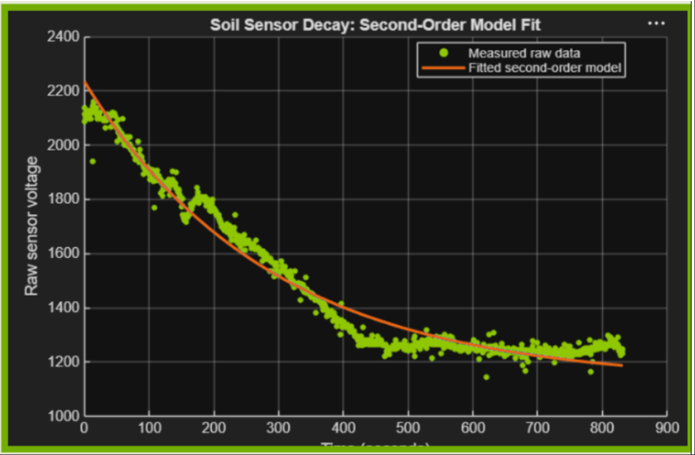
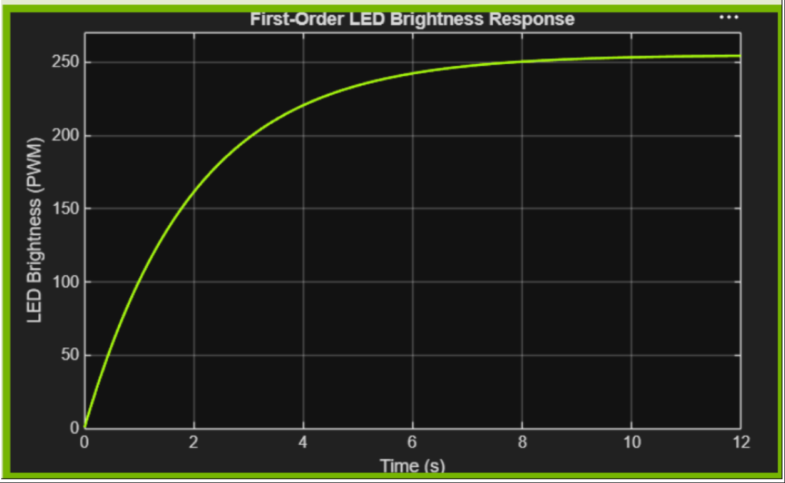
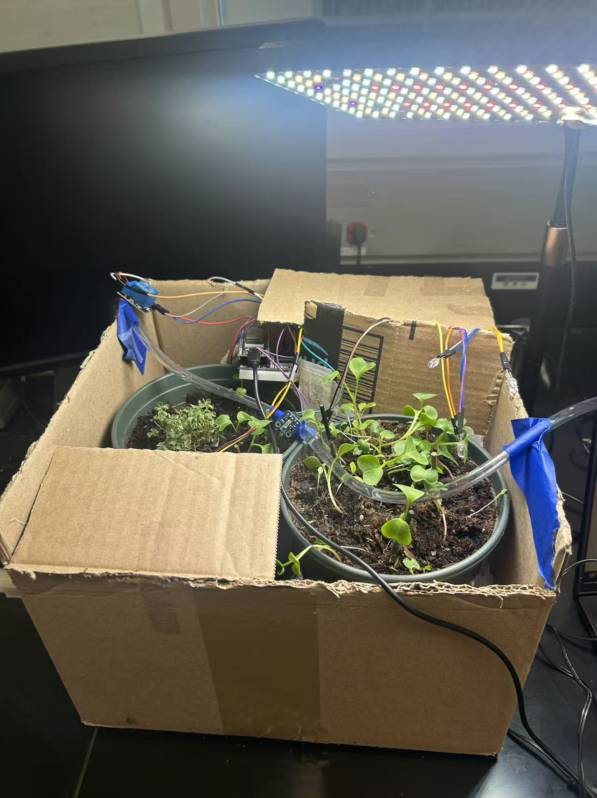
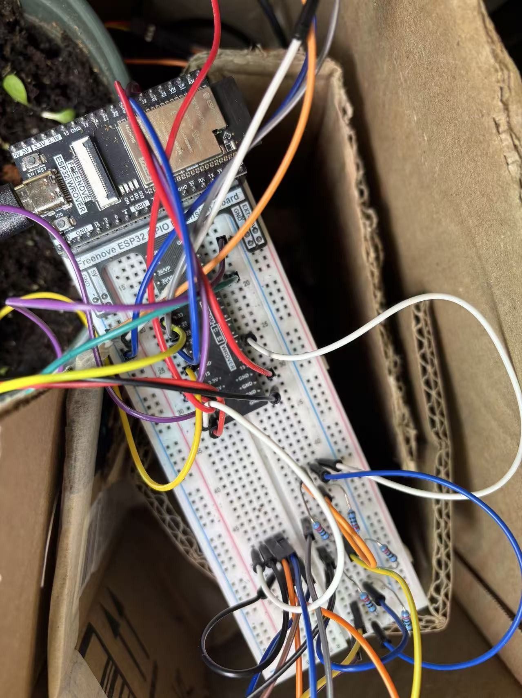

A planter-scale digital twin that waters, lights, and watches itself.
Adapted from AgriLoRa's field-scale sensing architecture down to a single bed: an ESP32 reads soil, light, and air conditions, drives two closed-loop controllers, and screens for disease, all logged live below.
Live from the bed
Pulled directly from our ThingSpeak channel. Irrigation and light run their own predictive logic on the ESP32; everything below is a live readout, not a simulation.
// Disease Detector reads 0 = healthy, 1 = disease flagged, 2 = uncertain. An email alert fires automatically on a "1" via ThingSpeak React.
How it got built
A real build order, week by week, not a cleaned-up version of it.
Week 1 — Sensors talk to the board
Soil moisture, DHT22, and the VEML7700 lux sensor wired and calibrated on the ESP32. Confirmed dry/wet reference readings by hand before trusting any percentage math.
Week 2 — The first closed loop
Threshold-based irrigation and a first-order LED controller, both reacting to live readings. This became the fallback layer everything predictive is built on top of.
Week 3 — Prediction, not just reaction
Logged a full soil drying curve, fit a second-order decay model in MATLAB (R² = 0.97), and moved irrigation from "water when dry" to "water before it gets there." Added a divergence check that falls back to the live sensor whenever the model and reality disagree by more than 15%.
Week 4 — Camera, ML, and the dashboard
ESP32-CAM feeding a pretrained leaf classifier, ThingSpeak wired up for all six channels, and an automated email alert on a positive disease flag. Everything above is what's actually running right now.
The two models doing the thinking
One predicts ahead of a sensor reading. The other reacts smoothly to one. Neither pretends to be the other.
Soil moisture decay
Fit against a logged drying curve rather than assumed. The controller forecasts moisture five minutes out and waters ahead of the threshold, falling back to the live sensor whenever its own forecast drifts more than 15 points from reality.
R² = 0.9709
LED brightness response
No overshoot by design: brightness eases toward whatever the ambient sensor calls for. A lightweight self-check compares the closed-form prediction against actual output and only steps in with simple proportional correction when the two disagree.
τ chosen ≥ 10× sensor response time
From the bench
Swap these slots for your real build photos, wiring shots work best.


Questions worth asking
Including the ones that make the project look less finished, on purpose.